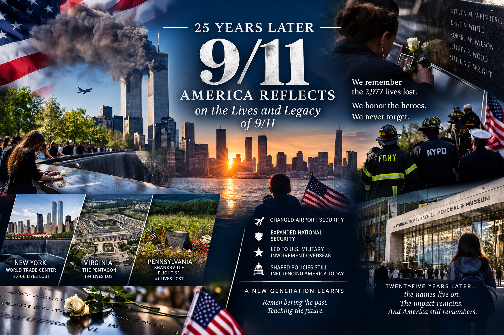
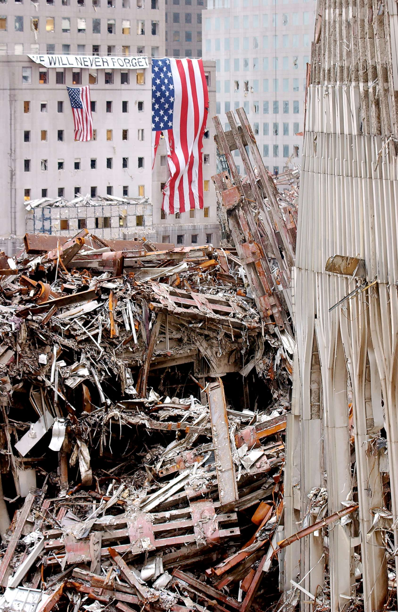

25 Years Later, America Reflects on the Lives and Legacy of 9/11
National | Remembrance
Published: September 11, 2026

A quarter-century after the September 11 terrorist attacks, Americans gathered Friday to remember the people who were killed, honor those who responded and reflect on an event that permanently altered the country.
September 11, 2026, marked 25 years since 19 al-Qaida terrorists hijacked four commercial airplanes and carried out attacks in New York, Virginia and Pennsylvania. In total, 2,977 people were killed in the attacks.
Memorial gatherings took place throughout the country, with the largest observances centered around the three locations directly connected to the attacks: the World Trade Center in New York, the Pentagon and the field near Shanksville, Pennsylvania, where Flight 93 went down.
Names Remain at the Center of the Commemoration
At the 9/11 Memorial in New York City, family members gathered to read the names of those killed during the attacks. The annual ceremony also recognized people who died in later years from illnesses and injuries associated with the recovery and cleanup following 9/11.
The 25th anniversary ceremony included seven moments of silence corresponding with major moments of the attacks and the subsequent loss of life. The memorial organization said the observance was also designed to help younger generations understand an event they did not personally experience.
For families who lost relatives, the anniversary remains more than a historical milestone. It continues to represent birthdays, anniversaries, memories and lives that were interrupted on one September morning.
From New York to the Pentagon
The World Trade Center was not the only site of remembrance.
At the Pentagon, a ceremony honored the 184 people who died when American Airlines Flight 77 struck the building. President Donald Trump attended the Pentagon observance.

In New York, Vice President JD Vance and former presidents Joe Biden, Barack Obama, Bill Clinton and George W. Bush were among the political figures attending the Ground Zero commemoration.
Shanksville also remained an important part of the day’s remembrance. Flight 93 crashed there after passengers and crew members attempted to confront the hijackers. Their actions have become an enduring part of the story of September 11.
The Impact Reached Far Beyond One Day
The consequences of the attacks extended well beyond the immediate destruction.
The United States dramatically changed airport security, expanded its national-security infrastructure and created new government structures focused on protecting the country from terrorism.
The attacks also preceded lengthy U.S. military involvement overseas, particularly in Afghanistan and Iraq. Surveillance, intelligence gathering and other national-security policies expanded as the government sought to prevent another large-scale attack.
Those changes have continued to influence American society and government decades later.
A New Generation Learns the History
For Americans who were adults or children in 2001, memories of the attacks can remain extremely vivid.
But an entire generation has now grown up without experiencing September 11 firsthand.
The 9/11 Memorial & Museum says roughly 100 million Americans are too young to remember the attacks. Its anniversary programming is therefore focused not only on remembering those who died, but also on teaching younger people about what happened and its continuing consequences.
The museum’s 25th-anniversary programming includes a new exhibition examining acts of service inspired by the tragedy and the ways individuals and communities responded to the events of 2001.
Twenty-Five Years of Remembrance
The anniversary comes with a mixture of grief, reflection and historical perspective.
For victims’ families, first responders and survivors, the memories remain deeply personal. For younger Americans, the attacks have increasingly become part of the history they learn through schools, museums, photographs, documentaries and stories passed down by older generations.
Twenty-five years later, the locations where the attacks occurred continue to serve as places of remembrance.
The annual ceremonies ensure that the names of those who died remain part of the national memory while also recognizing the lasting effects experienced by survivors, first responders and families.
September 11, 2001, changed the course of American history. A generation later, the country continues to remember the lives lost and examine the lasting impact of that day.